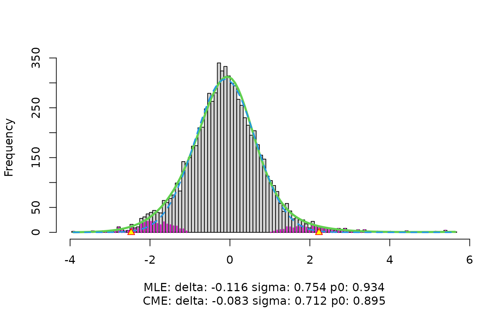

Local False Discovery Rate Calculation
locfdr.RdCompute local false discovery rates, following the definitions and description in references listed below.
Usage
locfdr(
zz,
bre = 120,
df = 7,
pct = 0,
pct0 = 1/4,
nulltype = 1,
type = 0,
plot = 1,
mult,
mlests,
main = " ",
sw = 0
)Arguments
- zz
A vector of summary statistics, one for each case under simultaneous consideration. The calculations assume a large number of cases, say `length(zz)` exceeding 200. Results may be improved by transforming zz so that its elements are theoretically distributed as \(N(0,1)\) under the null hypothesis. See the locfdr vignette for tips on creating zz.
- bre
Number of breaks in the discretization of the z-score axis, or a vector of breakpoints fully describing the discretization. If `length(zz)` is small, such as when the number of cases is less than about 1000, set bre to a number lower than the default of 120.
- df
Degrees of freedom for fitting the estimated density \(f(z)\).
- pct
Excluded tail proportions of zz's when fitting \(f(z)\). `pct=0` includes full range of zz's. pct can also be a 2-vector, describing the fitting range.
- pct0
Proportion of the zz distribution used in fitting the null density \(f_0(z)\) by central matching. If a 2-vector, e.g. `pct0=c(0.25,0.60)`, the range `[pct0[1], pct0[2]]` is used. If a scalar, `[pct0, 1-pct0]` is used.
- nulltype
Type of null hypothesis assumed in estimating \(f_0(z)\), for use in the fdr calculations. 0 is the theoretical null \(N(0,1)\), 1 is maximum likelihood estimation, 2 is central matching estimation, 3 is a split normal version of 2.
- type
Type of fitting used for \(f\); 0 is a natural spline, 1 is a polynomial, in either case with degrees of freedom df (so total degrees of freedom including the intercept is `df+1`).
- plot
Plots desired. 0 gives no plots. 1 gives single plot showing the histogram of zz and fitted densities \(f\) and \(p_0 f_0\). 2 also gives plot of fdr, and the right and left tail area Fdr curves. 3 gives instead the \(f_1\) cdf of the estimated fdr curve; plot=4 gives all three plots.
- mult
Optional scalar multiple (or vector of multiples) of the sample size for calculation of the corresponding hypothetical Efdr value(s).
- mlests
Optional vector of initial values for \((\delta_0, \sigma_0)\) in the maximum likelihood iteration.
- main
Main heading for the histogram plot when `plot>0`.
- sw
Determines the type of output desired. 2 gives a list consisting of the last 5 values listed under Value below. 3 gives the square matrix of dimension bre-1 representing the influence function of log(fdr). Any other value of sw returns a list consisting of the first 7 (8 if mult is supplied) values listed below.
Value
Depending on the value of `sw`:
For `sw` other than 2 or 3, an object of class `"locfdr"` (inheriting from `"list"`) with components:
- fdr
the estimated local false discovery rate for each case, using the selected type and nulltype.
- fp0
a matrix of estimated parameters delta, sigma, and p0, along with their standard errors, for all three null types.
- Efdr
the expected false discovery rate for the non-null cases.
- cdf1
a 99x2 matrix giving the estimated cdf of fdr under the non-null distribution \(f_1\).
- mat
a matrix of estimates at the bin midpoints.
- z.2
the interval where fdr < 0.2.
- call
the function call.
- nulltype
the nulltype used.
- N
the number of cases.
- mult
if the argument mult was supplied, vector of Efdr ratios for sample size multiples.
For `sw=2`, a list with components `pds`, `x`, `f`, `pds.`, `stdev`.
For `sw=3`, the influence function matrix of log(fdr).
References
Efron, B. (2004) "Large-scale simultaneous hypothesis testing: the choice of a null hypothesis", Jour Amer Stat Assoc, 99, pp. 96–104.
Efron, B. (2006) "Size, Power, and False Discovery Rates".
Efron, B. (2007) "Correlation and Large-Scale Simultaneous Significance Testing", Jour Amer Stat Assoc, 102, pp. 93–103.
Examples
## HIV data example
data(hivdata)
w <- locfdr(hivdata)
